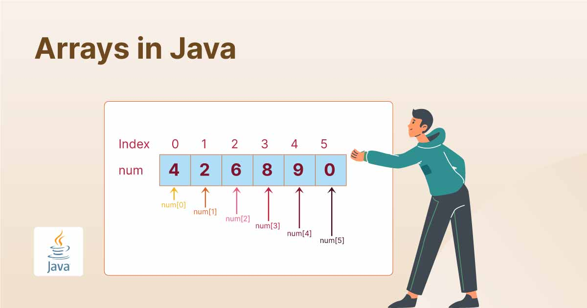
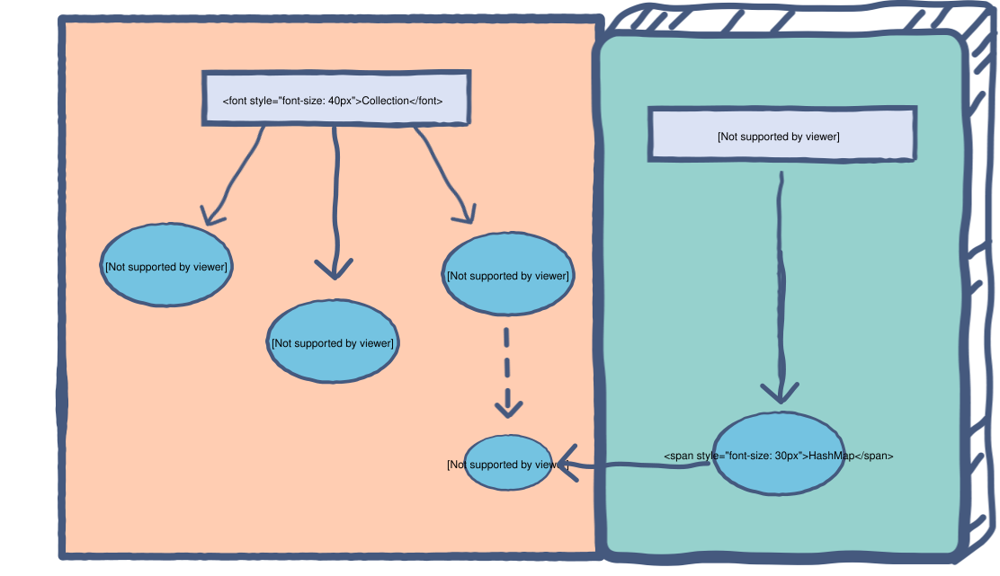

1. Arrays y su manipulación
Un array es una estructura de datos fija que almacena valores del mismo tipo en posiciones consecutivas indexadas. Su tamaño no puede cambiar tras la creación y permite acceso rápido mediante índices.

1.2 Declaración e inicialización
Para usar un array hay que declararlo, reservar memoria e inicializar sus valores. Puede contener tipos primitivos u objetos.
// Declaración
int[] edades = new int[3];
// Inicialización directa
int[] edades = {21, 30, 25};1.3 Acceso y modificación
El acceso se realiza mediante índices comenzando en 0. Intentar acceder fuera del rango provoca error.
//Acceso al primer elemento
System.out.println(edades[0]);
//Modificación del segundo elemento
edades[1] = 31;1.4 Recorrido de arrays
Los arrays pueden recorrerse con bucles tradicionales o estructuras for-each que simplifican la lectura.
//Recorrido con for tradicional
for (int i = 0; i < edades.length; i++) {
System.out.println(edades[i]);
}
//Recorrido con for-each
for (int edad : edades) {
System.out.println(edad);
}1.5 Arrays multidimensionales
Son arrays de arrays. El más común es el bidimensional, usado para representar tablas o matrices. Un ejemplo es un array de notas de estudiantes en diferentes asignaturas.
int[][] notas = [
[5, 6, 7],// Notas de estudiante 1 en asignaturas A, B, C
[8, 9, 10]// Notas de estudiante 2 en asignaturas A, B, C
]Para acceder a los elementos de un array multidimensional, se utilizan dos índices: uno para la fila y otro para la columna.
// Acceso a la nota del estudiante 1 en la asignatura B
int nota = notas[0][1]; // Devuelve 6
// Acceso a la nota del estudiante 2 en la asignatura C
int nota = notas[1][2]; // Devuelve 101.6 Clonado y comparación
En Java si se asigna un array a otro, ambos apuntan al mismo objeto. Esto puede causar problemas si se modifica uno de ellos. Para crear una copia independiente se usa clone(). La comparación con == verifica si son el mismo objeto, no su contenido.
copia = edades.clone()
if (edades == copia) {
System.out.println("Mismo objeto");
} else {
System.out.println("Objetos diferentes");
}Para comparar el contenido de dos arrays se puede usar Arrays.equals() que devuelve true si ambos arrays tienen el mismo tamaño y los mismos elementos en el mismo orden.
if (Arrays.equals(edades, copia)) {
System.out.println("Contenido igual");
} else {
System.out.println("Contenido diferente");
}
2. Listas y colecciones dinámicas
Las colecciones permiten almacenar datos de forma dinámica sin tamaño fijo. Pertenecen al framework de colecciones e incluyen listas, mapas y estructuras complejas.

2.2 Uso de ArrayList
- Estructura dinámica ordenada que permite añadir, eliminar y acceder a elementos sin restricciones de tamaño.
- Permite almacenar elementos duplicados y mantiene el orden de inserción.
- Ideal para listas de objetos donde se requiere flexibilidad.
- Únicamente almacena objetos, por lo que para tipos primitivos se usan sus clases envolventes (Integer, Double, etc.).
- Ejemplo de uso:
ArrayList< String> nombres = new ArrayList< String>();
nombres.add("Laura");
nombres.add("Marc");
nombres.add("Elena");
nombres.add("Mario");2.3 Uso de HashMap
- Implementa la interfaz Map, almacena pares clave-valor sin orden específico.
- Permite acceso rápido a los valores mediante sus claves, ideal para búsquedas.
- No permite claves duplicadas, pero sí valores duplicados. Si se inserta una clave existente, su valor se actualiza.
- Ejemplo de uso:
HashMap< String, Integer> edades = new HashMap< String, Integer>();
edades.put("Lucía", 23); // Clave: "Lucía", Valor: 23
edades.put("David", 31); // Clave: "David", Valor: 31
edades.put("Lucía", 24); // Clave: "Lucía", Valor: 24 (actualiza el valor)
System.out.println(edades.get("Lucía")); // Devuelve 24
System.out.println(edades.get("David")); // Devuelve 312.4 Operaciones básicas
Las colecciones permiten múltiples operaciones fundamentales.
- Añadir elementos
- Eliminar elementos
- Comprobar existencia
- Obtener tamaño
2.5 Conversión entre arrays y colecciones
Es posible cambiar entre arrays y listas dinámicas para aprovechar las ventajas de cada estructura.
frutas = ["Manzana", "Pera", "Naranja"]
lista = list(frutas)
nuevo_array = list(lista)2.6 Colecciones anidadas
Las colecciones pueden contener otras colecciones, lo que permite modelar estructuras complejas como matrices, agendas o grafos.
matriz = [
[1, 2, 3],
[4, 5, 6]
]
3. Uso de iteradores
Los iteradores permiten recorrer colecciones sin exponer su estructura interna, y permiten eliminar elementos con seguridad.
3.1 Iterador simple
Un iterador recorre la colección paso a paso mediante hasNext y next.
for nombre in nombres:
print(nombre)3.2 Iteración con for-each
La opción más simple, ideal cuando solo se leen datos.
for numero in numeros:
print(numero)3.3 ListIterator
Permite recorrer listas en ambas direcciones y modificar elementos durante el recorrido.
3.4 Buenas prácticas
- No modificar colecciones dentro de un for-each.
- Usar remove del iterador para eliminar elementos.
- Usar ListIterator para recorrer hacia atrás.
3.5 Iteradores en estructuras anidadas
Para listas dentro de listas puede utilizarse un iterador o un for-each anidado.
for fila in matriz:
for numero in fila:
print(numero)4. Comparación de colecciones
Cada colección destaca en ciertos escenarios. La elección depende de orden, duplicados, rendimiento y tipo de acceso.
- Array → tamaño fijo, acceso rápido
- ArrayList → tamaño dinámico
- HashMap → búsqueda por clave
5. Métodos y clases genéricos
Los genéricos permiten crear clases y métodos que trabajan con distintos tipos sin duplicar código, garantizando seguridad de tipos.
5.2 Ejemplo de método genérico
def mostrar(elemento):
print(elemento)5.3 Clases genéricas
class Caja:
def __init__(self, contenido):
self.contenido = contenido6. Expresiones regulares
Una expresión regular define un patrón para validar, buscar o transformar texto. En Java se usa Pattern y Matcher.
Validación básica
import re
re.match(r"\w+@\w+\.\w+", "info@linkiafp.es")7. XML y su tratamiento
XML es un formato de datos estructurado y jerárquico utilizado para intercambio de información. En Java puede leerse o generarse mediante DOM, SAX o StAX.